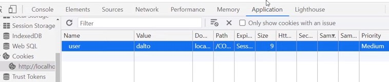
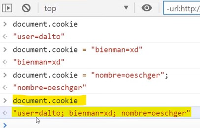
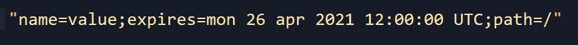
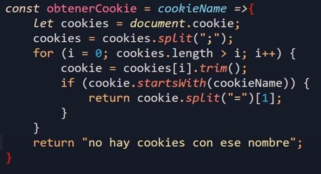
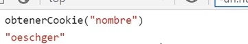
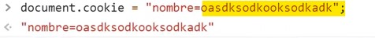
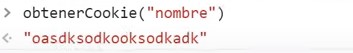
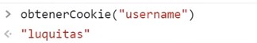
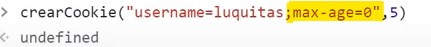

Las cookies en sí se tratan de elementos con una estructura "nombre/valor/parámetros", de la cual los únicos datos indispensables se tratan del nombre y el valor, en contraposición a los parámetros, los cuales son de carácter opcional.
Las cookies se declaran utilizando el objeto "document" con el método ".cookie", seguido de la cadena "nombre=valor" que conformará la cookie, de la siguiente forma:
Código
De este modo, las cookies son generadas y almacenadas en el navegador; para visualizarlas se emplean las "herramientas de desarrollador", específicamente la pestaña de "Application" en la sección de "cookies", como se puede apreciar a continuación:
Resultado

Nota: Cada una de las columnas que conforman la tabla en la que se visualizan las cookies corresponden a un atributo que puede ser asignado a estas.
Otro posible uso del método ".cookie" se aplica en los casos en los que este es declarado sin datos que registrar; de este modo, el método permite obtener todas las cookies que se encuentren almacenadas en el navegador.
Ejemplo

Nota: Tener presente el hecho de que al emplearse el método de esta forma, se añadirá un ";" para separar cada una de las cookies.
Atributos
Una particularidad de las cookies se trata de que los atributos de estas no son trabajados desde el front-end; por lo tanto, si bien sí pueden ser declarados desde allí, una vez hecho esto no se podrá manipular ninguno de estos desde un lugar que no sea el back-end. Por lo tanto, a los únicos datos de las cookies a los que se tiene pleno acceso desde el front-end se tratan del "name" y del "value".
Para declarar los atributos de una cookie se mantiene el formato de "nombre/valor"; por lo tanto se iguala el respectivo nombre del atributo al valor que poseerá este, sin olvidar que cada atributo se debe separar con punto y coma, tal como se puede apreciar a continuación:
Ejemplo

De esta forma es como se observa una cookie, la cual para este ejemplo posee tres atributos básicos, los cuales son el "name", la "expiración" y la "ubicación (path)".
Nota: La sesión de las cookies, de no ser declarada, se mantiene activa hasta que se cierre la sesión actual de la página.
Una característica de las cookies radica en que estas tienen un límite de peso que pueden soportar, el cual es de 4kb, mientras que "sessionStorage" o "localStorage" poseen un límite de 5MB; sin embargo, las cookies cuentan con la ventaja de que estas son mucho más rápidas de ejecutar por el navegador.
Ejemplo de una función que obtiene el valor de una cookie

Como ya se mencionó, esta función permite obtener el valor del campo "value" de una cookie; es decir, permite obtener el valor vinculado al nombre de cada registro. El flujo de esta función descrito a continuación sería:
-
Lo primero es utilizar el método "document.cookie" para obtener todas las cookies declaradas hasta el momento y se almacenan en la variable cookies.
Nota: Recordar que la forma en la que este método retorna las cookies es en la de una única cadena de texto, con cada uno de los valores separados por punto y coma (;).
-
Luego se utiliza el método ".split" con el valor (;), método que permite porcionar una cadena de texto y retornar sus partes en un array. Para determinar dónde se separará la cadena de texto se utiliza el símbolo definido en este método.
Por lo tanto, en este paso se utiliza el método ".split" para separar cada valor y almacenarlo en los campos del array, esto cada vez que se encuentre un (;).
-
Seguido a esto se utiliza un ciclo "for" para recorrer el array aplicando el método ".trim", el cual permite eliminar los caracteres de espacio en blanco (" ") que en ocasiones se pueden añadir a las secciones de las cadenas de texto en las que se aplica el método "split"; ya que estos caracteres causarían errores en el código, es necesario eliminarlos.
-
Ya terminando, se aplica un condicional "if" para determinar si el nombre de alguna de las cookies inicia con los mismos caracteres que los datos proveídos por el usuario; para esto se usa el método ".startsWith".
-
Una vez se han obtenido todas las cookies y se han almacenado adecuadamente, así como también se ha validado que estas coincidan con los datos ingresados por el usuario, se obtiene el valor de la cookie.
Ya que en este punto las cookies están conformadas por cadenas de texto "nombre=valor", se procede a aplicar por segunda vez el método ".split", pero esta vez se define el símbolo "=", y se define el segundo índice del array.
En otras palabras, lo que ocurre es que al aplicar el método ".split" en las cadenas "nombre=valor", el valor es almacenado en el segundo índice del array, el cual es llamado al indicar "[1]", con el fin de ser retornado por la función.
Modificar una Cookie
Realmente las cookies en sí no son modificadas; en su lugar son reescritas o declaradas nuevamente. Por lo tanto, lo único necesario para modificar el valor de la cookie es declararla pero con el nuevo valor luego del símbolo "=".
Original

Modificación

Final

Eliminar Una Cookie Desde el Frontend
Como se ha mencionado anteriormente, los atributos de las cookies no se pueden modificar desde el front-end; sin embargo, existe una manera de eliminar las cookies desde este.
Este truco realmente es muy simple: se basa en declarar la cookie como si se desease modificarla, pero en este caso lo que se hará es: luego de la cadena "nombre=valor" se añade un punto y coma (;), seguido a este se ingresa "max-age=0", es decir, el tiempo de vigencia de la cookie.
De este modo, al aplicarse la modificación se interpreta el nuevo valor del atributo "max-age", el cual al estar definido en cero "0" resulta en que la cookie en cuestión se elimine debido a que se considera expirada.
Original

Modificación

Nota: Ya que una de las aplicaciones de las cookies radica en recopilar datos del usuario, la temática de la privacidad es muy relevante en estas; por ello, en caso de necesitar desarrollar o aplicar una de estas cookies, lo más recomendable es investigar sobre el cumplimiento del "RGPD y las leyes de privacidad".